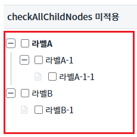
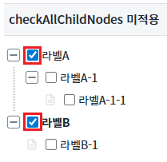
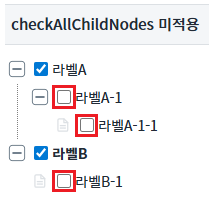
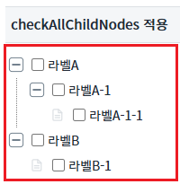
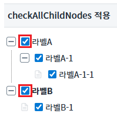
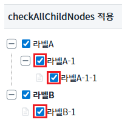
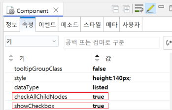

Treeview의 'checkAllChildNodes' 속성을 사용하여 부모노드를 체크하면 자식노드도 모두 체크할지의 대한 예제입니다.
개별 체크하기
부모노드 체크 시 자식노드 체크하기
1
STEP 1: 초기 상태를 확인합니다.
예제 영역 'checkAllChildNodes 미적용'에 구성된 Treeview를 확인합니다.Image 1.브라우저(Chrome) 실행 예시

2
STEP 2: 체크 박스를 체크합니다.
'라벨A', '라벨B'의 체크 박스를 각 각 체크한다.
Image 2.브라우저(Chrome) 실행 예시

3
STEP 3: 실행 결과를 확인합니다.
자식 노드와는 관계없이 클릭한 곳에만 체크 표시가 입력되는 것을 확인합니다.
Image 3.브라우저(Chrome) 실행 예시

1
STEP 1: 초기 상태를 확인합니다.
예제 영역 'checkAllChildNodes 적용'에 구성된 Treeview를 확인합니다.Image 4.브라우저(Chrome) 실행 예시

2
STEP 2: 체크 박스를 체크합니다.
'라벨A', '라벨B'의 체크 박스를 각 각 체크한다.
Image 5.브라우저(Chrome) 실행 예시

3
STEP 3: 실행 결과를 확인합니다.
부모노드의 자식노드는 모두 체크가된 것을 확인한다.
Image 6.브라우저(Chrome) 실행 예시

1
Treeview의 속성을 정의합니다.
[필수] checkAllChildNodes="옵션 선택 값"
(옵션 설명)
- false: [default] 각 각 노드 개별로 체크를 한다.
- true: 부모노드 체크 시 하위 노드도 체크를 실시한다.
[필수] showCheckbox="옵션 선택 값"
(옵션 설명)
- false: [default] 노드 옆에 체크박스를 표시하지 않는다.
- true: 노드 옆에 체크박스를 표시한다.
Image 7.웹스퀘어 스튜디오의 Component View 예시

Example 1.Source
<!-- Treeview 의 소스 본문 예시 --> <w2:treeview checkAllChildNodes="true" showCheckbox="true"> <!-- 중략 --> </w2:treeview>
checkAllChildNodes
showCheckbox